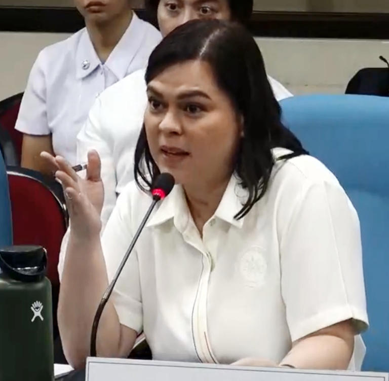
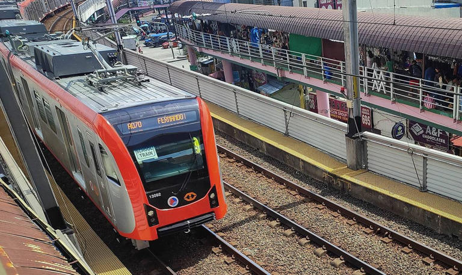
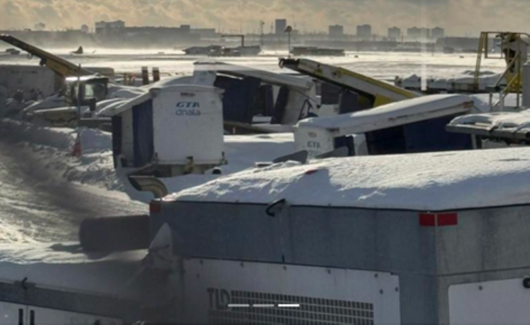

Petition to stop impeachment trial vs VP Duterte filed at Supreme Court
MANILA, Philippines — Mindanawon lawyers on Tuesday filed a petition before the Supreme Court (SC) in a bid to stop the impeachment complaint filed against Vice President Sara Duterte. The Petition for Certiorari and Prohibition seeks to issue a temporary restraining order and declare the impeachment complaint null and void.
LRT-1 announces fare hike in April
\MANILA, Philippines — Commuters taking the Light Rail Transit Line 1 (LRT-1) will soon have to pay higher fares as the Light Rail Manila Corporation (LRMC) announced on Tuesday that an increase has been approved, effective April 2, 2025.
Child among 8 casualties in Toronto plane incident
TORONTO — A badly injured child is among eight people who were hurt Monday when a Delta Airlines plane flipped upon arrival at Toronto's Pearson Airport.